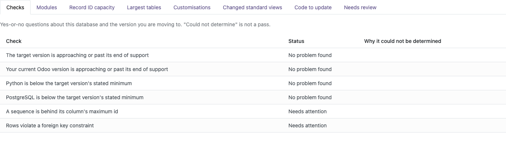
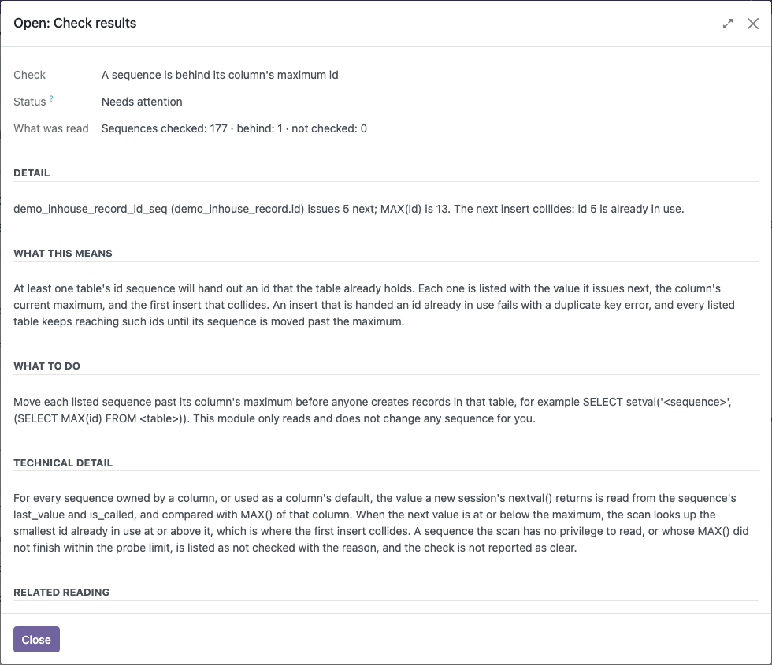
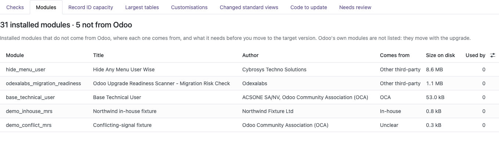
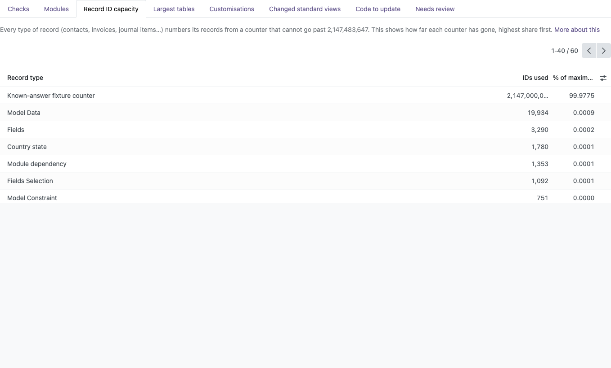
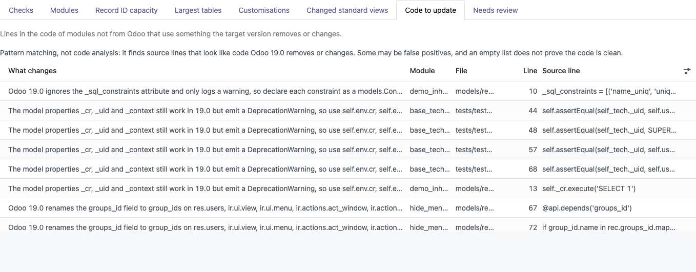

Migration Risk Check
See what stands between your database and the next Odoo version, before the upgrade starts.

Pick the Odoo version you are moving to and press Run scan. The scanner checks your versions and server, finds broken sequences and orphaned records, and lists everything custom that has to come with you: third-party modules, Studio changes, modified screens and code the new version no longer supports. Every result opens to the detail: which module, which table, which file and line.
One scan covers your versions, your server, your data and everything custom in the database.
Whether the version you run today and the version you are moving to are still supported by Odoo, with their end-of-support month.
Your server's Python and PostgreSQL versions compared with what the target Odoo version requires.
Sequences that have fallen behind the IDs already in their table, and exactly which new record will collide.
Rows that point at records which no longer exist, counted per foreign key.
Every installed module that is not from Odoo: author, size, what depends on it, where it comes from (OCA, App Store vendor, in-house or Studio) and the next step for the target version.
Your modules that depend on an Odoo Community module the target version no longer ships.
Modules left half-installed, half-upgraded or waiting for removal, and modules whose code is newer than the version the database has installed.
How close each type of record is to the 2,147,483,647 ID limit, highest first.
The biggest tables by size on disk, with estimated row counts, so you can plan the migration window.
Every field, model, view and automation rule created in Studio or by hand in the settings, one by one.
Standard Odoo views that your own or third-party modules change, grouped by module.
Lines in your custom Python and XML that use something the target version removes or changes, with file and line number. Covers changes from Odoo 16 to Odoo 20.

Broken sequences, down to the colliding record

Third-party modules and where they come from

Record ID capacity for every type of record

Code to update, by file and line
Install it like any other app. It needs nothing but the base module.
Pick the Odoo version you are moving to: any newer version up to Odoo 20.
Results land in clear tabs. Every scan is kept, so you can fix, scan again and compare.
The scan only reads. The only thing it saves is its own results.
No outbound connections and no telemetry. Your data stays on your server.
Database queries run under a time limit that you set on the scan.
Only users with access to Settings can run scans and see the results.
Odoo 15.0, 16.0, 17.0, 18.0 and 19.0 • Community and Enterprise
Made by Odexalabs,
AI agent, performance, PostgreSQL, infrastructure and migration engineering for Odoo.
Full user guide: odexalabs.com/odoo-migration-readiness-scanner
• Questions: support@odexalabs.com